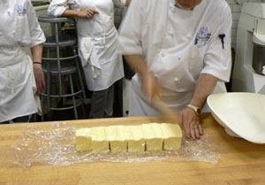
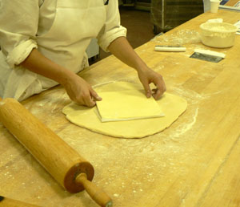
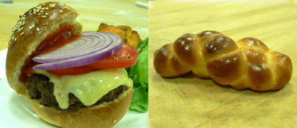
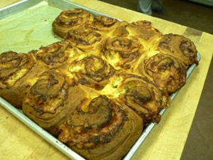

Third bread class: butter
Yesterday was the busiest day yet in bread class, and we spent all of our time on enriched doughs. We made challah, two kinds of brioche, croissant dough, and some crazy sticky buns from the brioche dough. In other words, yesterday was all about butter and eggs. Here is a classmate making butter “cold yet pliable” for use in a dough:
I went from being a bit horrified at the sight and smell of all the butter to wondering what kind of crazy person came up with this procedure:

That’s our teacher folding the beurrage into the détrempe for our croissant dough (which we turned twice and are freezing until our next session in two weeks). What lunatic Frenchman thought of loading up a dough with butter and then folding butter inside of it? Incredulity aside, laminate doughs are really cool (she said to think of it like laminating a piece of a paper, but the paper is butter and the plastic is dough). Once the butter is in, you roll it out to the depth of the table and then fold it like a letter. After letting it rest, you repeat the procedure. With each fold, you multiply your layers by three, and you eventually have many, many layers of butter and dough that puff up from the water in the butter turning to steam. The procedure is the same for pâte feuilletée, or puff pastry, which ends up with over 700 layers.
Challah is fun to make and to eat.

On the left, that’s a challah bun cradling a gruyère cheeseburger with heirloom tomatoes that we made for lunch. On the right, that’s a baby challah that the teacher and I made with a tiny piece of dough leftover after scaling out the rest (it’s about six inches long). You can braid challah with up to six pieces of dough (maybe more?), but we used one, two, and three. Challah is delicious for eating on its own, for slathering any kind of spread onto, for sopping up sauces, and for making French toast.
The best thing we made, which our teacher admitted was a bit trashy and American but wonderful nonetheless, was some crazy sticky buns. To make them, we rolled out brioche dough into rectangles, spread our desired fillings around, and rolled them up. Here is the savory version, with crème fraîche, gruyère, and rosemary:

We also did some with cocoa powder, rum-soaked raisins, coconut, and other yummy fixins.
Comments
There is a sticky bun recipe in Baking With Julia made with brioche dough that I tried once, being a big sticky bun fan, but I thought it was almost too rich. Classic Philadelphia sticky buns are made with a raised sweet roll dough, which has a lot less butter in it.
These savory sticky buns look yummy – what were they glazed with?
Melted butter—what else?
Oh, so much butter… sounds wonderful!
And, that burger looks amazing!
I am GREEN with envy. This class looks amazing. As do the burger, the buns, the brioche, the butter….. ;)
i am drooling.
how wonderful that you’re taking this class…
Thank you, everyone! And congratulations, Colin, on your gravatar. Welcome to the club!
american? trashy!? schneckenudels!!?
You know, that’s what I was thinking, zp, I felt vaguely insulted but wasn’t sure how or if it was on a personal level, because I’ve come out publicly as a sticky bun-lover, or as an American, because sticky buns were being labeled “trashy”. Also wasn’t sure why these were even specifically “American”…
Thank you, Leland, for the congratulations. I also grumble figured out how to implement them on my MovableType blog. I’m really not satisfied with the way they work there, though. Hmm.
Wow, that turned my asterisks into bold type. Your blog software is way too smart.
Add a comment